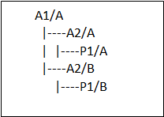
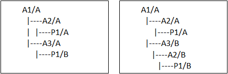

Using multiple revisions of documents
In the Teamcenter-managed environment, you can open multiple revisions of a document in the same item by enabling the Teamcenter preference SEEC_Enable_MultipleRevisions. This preference enables the configuration of document links to a different revision.
In the most basic workflow, you can open two revisions of the same item that have no additional document links:
-
Enable the Teamcenter preference at the site, group, role, or user level.
-
From the Open File dialog box, select two revisions of the same item, and click Open.
In Assembly
You can open an assembly that uses multiple revisions of an item as long as:
-
The assembly has more than one level.
-
Each subassembly or container contains only one item revision.
-
You are not using patterned components.
-
You use precise BOM View Revisions.
For example:
|
Not Supported |
Supported |
|---|---|
 |
 |
In Draft
Drawings act as a container and can only reference one revision of an item. The assembly defines the product structure and the drawing documents it.
In the Drawings View group→View Wizard, do not use the option, Create Drawing View Independent of Assembly.
Log file entry
When you open managed documents with multiple revisions, a message informs you that your design contains multiple revisions and SEECDiagnostics_<timestamp>.csv is added to your \Solid Edge\Version 223\Log Files folder. The .csv file lists each of the revisions and a message indicating the documents opened. For example:
|
Issue |
Type |
Item ID |
Revision |
Item Revision Display Name |
Message |
|---|---|---|---|---|---|
|
Contains multiple revisions |
Item |
Item ID |
A |
00010/A;1-Bracket |
Opened 0001203/A;1-A1 |
|
Contains multiple revisions |
Item |
Item ID |
B |
00010/B;1-Bracket |
Opened 0001203/A;1-A1 |
In Cache Assistant
When multiple revisions of a document are present in the cache, Cache Assistant displays the metadata associated with the documents. You can use any Cache Assistant command with any object in the table. However, the file name that displays for the second and subsequent revisions is a system-generated name. Solid Edge manages the file name when the document is uploaded to Teamcenter.
Choosing options in Structure Editor
Structure Editor uses the settings defined on the Manage page of the Solid Edge Options dialog box to determine how to work with multiple revisions of the same document. When you revise or copy a product structure containing multiple revisions of an item, you can choose from the following:
|
Revise All |
Action |
|---|---|
|
Create one new revision and replace the other revisions with the new revision. |
Sets the action to Revise on the latest revision, and then sets all other revisions to replace to the new revision. |
|
Create one new revision and reuse the other revisions. |
Sets the action to Revise on the latest revision, and has no action on the parent container that holds a link to the other revision. |
When you choose Save As All, you can choose from the following:
|
Save As All |
Action |
|---|---|
|
Create one new item and replace the other revisions with the new item. |
Creates a new item for the latest revision and uses it for all previous revisions. |
|
Create one new item and reuse the other revisions. |
Sets the action to Save As on the latest revision and then replaces the other document links with it. |
|
Create a new item for each revision. |
Creates a new item for each unique revision. |
Additional considerations
When you enable multiple revisions, keep in mind the following:
-
Enabling multiple revisions does not configure occurrences within a single document to different revisions.
-
Families of Parts and Families of Assemblies do not participate in multiple revisions.
-
Setting the action to both Save As and Revise on multiple revisions is not supported. First, revise the document, and then perform the Save As.
-
Use caution to not create circular references with Insert Assembly Copy, Insert Part Copy, and other similar commands.
How do I
Open a Teamcenter-managed documentOpen a Solid Edge document from Teamcenter rich client
Open a Solid Edge document from Active Workspace
Open a non-Solid Edge document in a Teamcenter-managed environment
Save a new Teamcenter-managed document
Revert documents to the version in Teamcenter
Save an existing design to a different Item type (SEEC)
Exclude Draft documents when using a Save As command (SEEC)
Automatically open a cloned draft document
Save a new document to an existing Teamcenter item
Assign a Teamcenter project to an item
Learn more
Using Download Options - OverridesResolving problems identified in the Issues column (New Document dialog box)
Using multifield keys in the Teamcenter managed environment
Using Teamcenter variants
Meta model
Look up more details
Hide CPD optionRevert command (SEEC)
Save As - New Item command
Exclude Draft option
Clone Draft command
Open cloned Draft option
Save to Existing command
New Document dialog box (SEEC)
Assign Project ID command
Select Projects dialog box